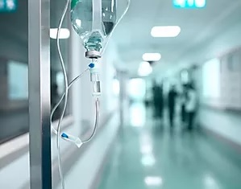
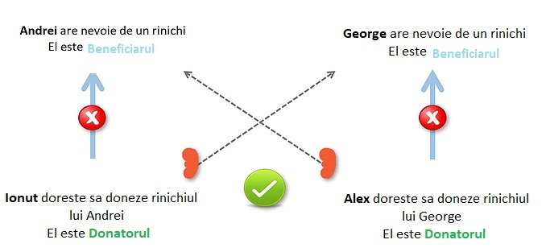

<section class="page-section pink-background" id="info">
    <div class="container">
        <h2 class="text-center mt-0">Cum sustine aceasta platforma transplantul renal?</h2>
        <hr class="divider my-4" />
        <div>
            <div class="container cc-education">
                <div class="flip-card">
                    <div class="flip-card-inner">
                        <div class="flip-card-front text-align">
                            
                            <div class="front-text text-center">Ce oameni au nevoie de acesta aplicatie?</div>
                        </div>
                        <div class="flip-card-back">
                            <div class="back-text">
                                Persoanele care suferă de insuficiență renală astăzi se confruntă cu
                                provocări
                                semnificative pentru a <b>obține un
                                    transplant</b>.
                                Acestea sunt plasate pe <b>lista de așteptare</b> în speranța că un rinichi de la un
                                <b>donator decedat</b> le va putea fi
                                transplantat lor.
                            </div>
                        </div>
                    </div>
                </div>


                <div class="flip-card">
                    <div class="flip-card-inner">
                        <div class="flip-card-front">
                            
                            <div class="front-text">Ce alta opțiune ar putea avea acești oameni?</div>
                        </div>
                        <div class="flip-card-back">
                            <div class="back-text">
                                Cu toate acestea, au o altă opțiune: <b>un donator viu</b>, pe cineva pe care îl cunosc,
                                din familie sau prieten, dispus să le
                                dea un rinichi. Din păcate, acești oameni nu pot fi <b>neaparat compatibili</b> pentru
                                transplant, cu toate acestea există o soluție numită
                                <b>„Kidney Exchange”</b> sau <b>„Kidney Paired Donation”</b>.
                            </div>
                        </div>
                    </div>
                </div>

                <div class="flip-card">
                    <div class="flip-card-inner">
                        <div class="flip-card-front">
                            
                            <div class="front-text" style="margin-left: 450px; margin-top: 4rem;">Care este soluția?
                            </div>
                        </div>
                        <div class="flip-card-back">
                            
                            <div class="back-text-solution">
                                Aceasta aplicatie va dori sa gaseasca cat mai multe <b>perechi de cate doua persoane</b>
                                care
                                sunt compatibile din punct de
                                vedere al transpantului renal, <b>interschimband membrii dintre perechile inscrise</b>
                                deja pe
                                platforma, dar incompatibile renal.
                            </div>
                        </div>
                    </div>
                </div>
            </div>
        </div>
    </div>
</section>